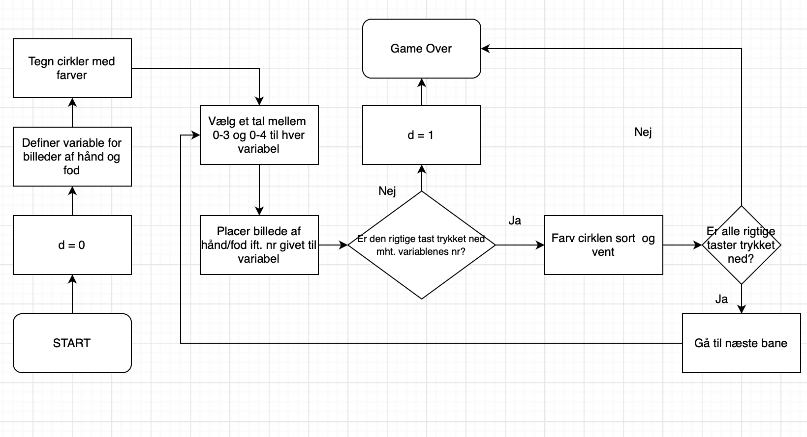

Spil, leg og sammarbejde
Dansk idrætsforbund er stærkt bekymret over en ny undersøgelse, der viser, at 3 ud af 4 børn og unge bevæger sig for lidt i hverdagen. De vil gerne motivere unge mennesker til at bevæge sig mere og til at være mere sociale, når de spiller computerspil. Med udgangspunkt i dette problem, skulle vi dermed udvikle et spil i p5, der indeholdt følgende elementer:
• Kan spilles af to eller flere personer, der fysisk er i nærheden af hinanden.
• Involverer et samarbejdende eller konkurrerende element, gerne inspireret af sport.
• Styres med Makey Makey og ikke direkte fra computeren.

Af Bastian,
Ann-Sophie, Tjalfe og Idil
Vores ide til sådan et interaktivt spil, der indeholder disse elementer blev inspireret at spillet "twister", hvor spillere skal placere hænder og fødder på en plade, alt efter hvad der bliver udtrukket. I stedet for at dreje et hjul der viser hvor man skal placere hånden/foden, ville dette blive vist på skærmen, hvorefter der sættes en timer, der placerer et tidspres på spilleren. Samtidigt registreres der på skærmen, hvorvidt spilleren har placeret sin hånd/fod korrekt. Her ville der være brug for 2 eller flere spillere, da de skal samarbejde om at placere hænder/fødder korrekt på pladen, for at komme til næste bane. Spillet er for besværligt at spille på en computer, og derfor er Makey Makey nødvendigt til at spille spillet. Nedenfor er vist et billede af Bastian der spiller og hvad der vises på skærmen under spillet:
Nedenfor ses et udsnit af vores kode samt en ilustration. Her beskrives den måde hvorpå programmet kunne registrere hvorvidt spilleren har placeret sin hånd/fod korrekt på pladen. Cirklerne havde hvert sit "nummer" afhængigt af deres plads i kolonnen/rækkken.
På cirklerne vil der være vist et billede af enten en højre/venstre fod/hånd og placeringen af disse er randomiseret - i rækkener fra 0-4 og i kolonnerne fra 0-3. Ved if-statement "if(keyIsDown(UP_ARROW))" vil den første røde cirkel med nummeret (0,0) blive farvet sort, hvis et af billederne er på denne cirkel - et af billederne har nummeret (0,0) - og tasten "UP_ARROW" trykkes ned. Dette vil ikke ændre værdien af "d" så spillet fortsætter ("d" er til start sat lig nul, og så længe "d = 0" fortsætter spillet). Hvis der ikke er et billede der har værdien (0,0), vil d = 1, og spillet stoppes med "Game Over". Dette gentages for hver cirkel hvor kolonne- og rækkenummer ændres samt tasten der skal trykkes ned.
if(keyIsDown(UP_ARROW)){
circle(150,250,60);
if (nhåndh == 0 && mhåndh == 0 || nhåndv == 0 && mhåndv == 0 || nfodh == 0 && mfodh == 0 || nfodv == 0 && mfodv == 0){d = 0}
else{d = 1;}
}
if(keyIsDown(DOWN_ARROW)){
fill(0)
circle(220,250,60);
if (nhåndh == 1 && mhåndh == 0 || nhåndv == 1 && mhåndv == 0 || nfodh == 1 && mfodh == 0 || nfodv == 1 && mfodv == 0){d = 0}
else{d = 1;}
} 